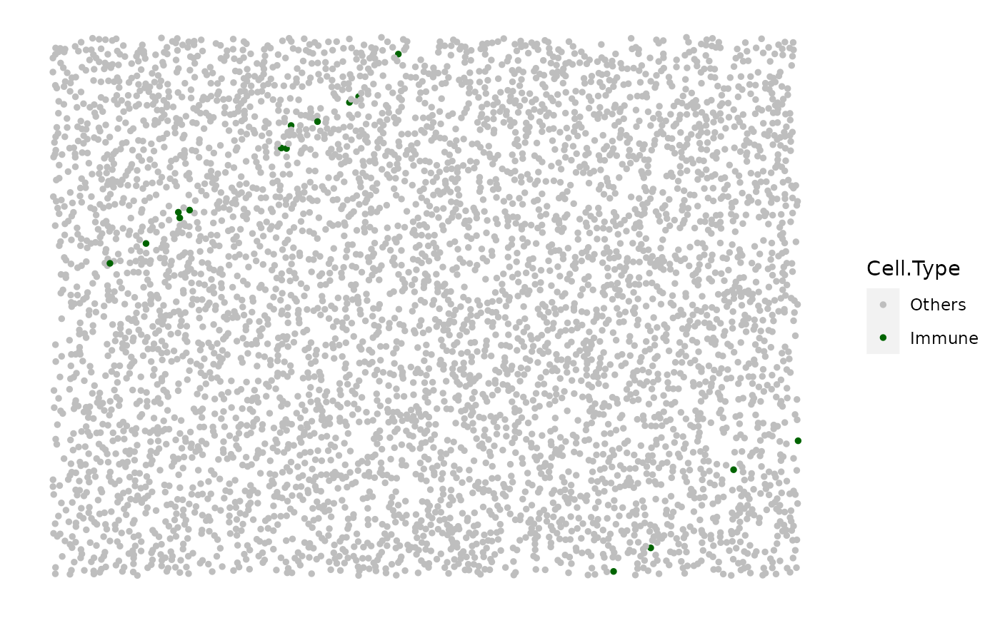

simulate_stripes
simulate_stripes.RdBased on an existing background image, simulate stripes of cells representing vessels. The cell types and widths of the stripes can be specified. The locations of the stripes are randomly simulated. Please refer to the examples to check what properties of the stripes can be specified. The default values for the arguments give an example of vessel simulation which enable an automatic simulation of vessels without the specification of any argument.
Usage
simulate_stripes(
bg_sample = bg1,
n_stripe_type = 2,
stripe_properties = list(S1 = list(number_of_stripes = 1, name_of_stripe_cell =
"Others", width_of_stripe = 80, infiltration_types = c("Immune"),
infiltration_proportions = c(0.08)), S2 = list(number_of_stripes = 1,
name_of_stripe_cell = "Others", width_of_stripe = 80, infiltration_types =
c("Immune"), infiltration_proportions = c(0.08))),
plot_image = TRUE,
plot_categories = NULL,
plot_colours = NULL
)Arguments
- bg_sample
(OPTIONAL) A data frame or
SpatialExperimentclass object with locations of points representing background cells. Further cell types will be simulated based on this background sample. The data.frame or thespatialCoords()of the SPE object should have colnames including "Cell.X.Positions" and "Cell.Y.Positions". By default use the internalbg1background image.- n_stripe_type
Number of stripe types. Should be the same as
length(stripe_properties.- stripe_properties
List of the properties of the stripes. See examples for the format of the properties. Please refer to the examples for the structure of
stripe_properties.- plot_image
Boolean. Whether the simulated image is plotted. Default is TRUE.
- plot_categories
String Vector specifying the order of the cell categories to be plotted. Default is NULL - the cell categories under the "Cell.Type" column would be used for plotting.
- plot_colours
String Vector specifying the order of the colours that correspond to the
plot_categoriesarg. Default is NULL - the predefined colour vector would be used for plotting.
See also
simulate_background_cells for all cell simulation,
simulate_mixing for mixed background simulation,
simulate_clusters for cluster simulation, and
simulate_immune_rings/simulate_double_rings for
immune ring simulation
Other simulate pattern functions:
simulate_background_cells(),
simulate_clusters(),
simulate_double_rings(),
simulate_immune_rings(),
simulate_mixing()
Examples
stripe_properties <- list(
S1 = list(
number_of_stripes = 1,
name_of_stripe_cell = "Others",
width_of_stripe = 80,
infiltration_types = c("Immune"),
infiltration_proportions = c(0.08)
), S2 = list(
number_of_stripes = 1,
name_of_stripe_cell = "Others",
width_of_stripe = 80,
infiltration_types = c("Immune"),
infiltration_proportions = c(0.08)))
set.seed(610)
stripe_image <- simulate_stripes(bg_sample = bg1, n_stripe_type=2,
stripe_properties = stripe_properties, plot_image = TRUE)
